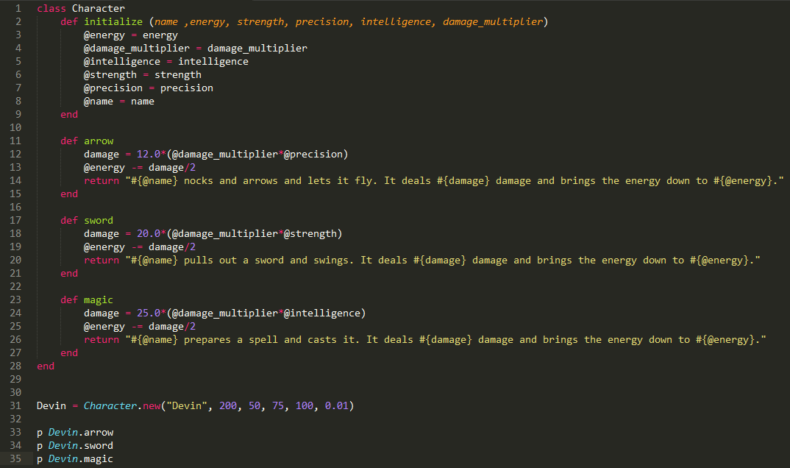

Class-Action Lawsuits
Bane Srdjevic
10/19/2014


Class-Action LawsuitsBane Srdjevic10/19/2014 |
|
All right, so now we've come to classes. When it comes to programming, it seems like everything is about organization. The program you need to make is one big pile of knick-knacks and you need to figure out the right way to organize it, and it won't work until you organize it the right way. So to do this, we have been using variables and methods as our filing folders and our filing systems, so we can refer to them whenever we need to store something away or move them somewhere else. But what if we suddenly have more than just one pile of junk to sort through, and now we have ten piles of junk to work with? Well, that's where classes come with: they're a way to bundles variables and methods so we can apply them quicker and easier to more data, faster.
Let's take a look at this code for example:

If you've read through it, you can see that it's a very simple way to handle attacks for a character in a hypothetical game. By creating a Character object and passing it the six arguments, which are then stored as instance variables to interact with the class methods, sword, magic, and arrow instance methods can be used to simulate attacks in the game quickly and easily. Let's say the player chooses to name their character “Steve”:
Attack with a magic spell:
Steve.magic
Attack with an arrow:
Steve.arrow
Attack with a sword:
Steve.sword
Simple, neat, and it can be used and reused over and over and over again. Profits! This code will go through and adjust the energy and damage output for the player based on their stats and how many of each type of attack they use. Afterwards it will print out the information. Combine this with a nice GUI and you have the start of a fun little RPG!